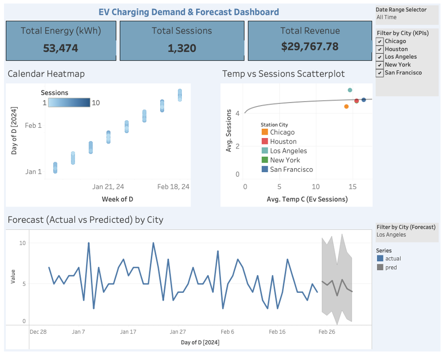

Projects

NLP-Based Statement Classification
Built and evaluated multi-class classification models in Python to predict the reliability of political statements, achieving 79.7% accuracy using LightGBM. Developed the full ML pipeline, including data cleaning, feature engineering (TF-IDF, OneHotEncoder, MultiLabelBinarizer), dimensionality reduction with TruncatedSVD, and hyperparameter tuning with GridSearchCV.
View ProjectPlant Care Chatbot (Amazon Bedrock + RAG)
Built a domain-specific chatbot using Retrieval-Augmented Generation (RAG) on Amazon Bedrock to deliver accurate, source-backed plant care advice. The system uses Titan Text Embeddings and OpenSearch Serverless to retrieve relevant content from structured documents stored in S3, with responses generated by the LLaMA 3.3 foundation model. Designed to eliminate the noise of web search and provide clear, trustworthy guidance.
View Project
NYC Taxi Mobility & Market Share Analysis
Processed and analyzed millions of NYC taxi and ride-hailing trips to examine transportation trends across boroughs, neighborhoods, and time periods. Built interactive visualizations comparing market share, geographic demand patterns, and changes in ridership behavior over time. Developed a data storytelling dashboard to communicate insights on urban mobility and support transportation planning decisions.
View Project
EV Charging Demand and Forecast Dashboard
Built an end-to-end analytics pipeline to transform EV charging session data into demand and utilization insights across five U.S. cities. Developed forecasting models to predict charging demand and identify regional usage trends. Created interactive dashboards to communicate operational metrics and support infrastructure planning decisions.
View Project